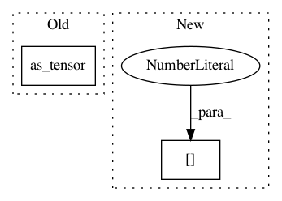

b914816142ae2776f531be1c0b49812a0bfde91f,torchdiffeq/_impl/adams.py,VariableCoefficientAdamsBashforth,__init__,#VariableCoefficientAdamsBashforth#Any#Any#Any#Any#Any#Any#Any#Any#Any#Any#,74
Before Change
self.func = lambda t, y: func(t.type_as(y), y)
self.rtol = torch.as_tensor(rtol, dtype=dtype, device=device)
self.atol = torch.as_tensor(atol, dtype=dtype, device=device)
self.first_step = None if first_step is None else torch.as_tensor(first_step, dtype=torch.float64, device=y0.device)
self.max_order = int(max_order)
self.safety = torch.as_tensor(safety, dtype=torch.float64, device=y0.device)
self.ifactor = torch.as_tensor(ifactor, dtype=torch.float64, device=y0.device)
self.dfactor = torch.as_tensor(dfactor, dtype=torch.float64, device=y0.device)
After Change
self.first_step = first_step
self.max_order = int(max(_MIN_ORDER, min(max_order, _MAX_ORDER)))
self.safety = _convert_to_tensor(safety, dtype=torch.float64, device=y0[0].device)
self.ifactor = _convert_to_tensor(ifactor, dtype=torch.float64, device=y0[0].device)
self.dfactor = _convert_to_tensor(dfactor, dtype=torch.float64, device=y0[0].device)
def before_integrate(self, t):
In pattern: SUPERPATTERN
Frequency: 3
Non-data size: 2
Instances
Project Name: rtqichen/torchdiffeq
Commit Name: b914816142ae2776f531be1c0b49812a0bfde91f
Time: 2020-08-04
Author: 33688385+patrick-kidger@users.noreply.github.com
File Name: torchdiffeq/_impl/adams.py
Class Name: VariableCoefficientAdamsBashforth
Method Name: __init__
Project Name: rtqichen/torchdiffeq
Commit Name: 18b6c1229b68daeeaaef2266d82ca475f83a7445
Time: 2020-12-18
Author: rtqichen@gmail.com
File Name: torchdiffeq/_impl/rk_common.py
Class Name: RKAdaptiveStepsizeODESolver
Method Name: __init__
Project Name: rusty1s/pytorch_geometric
Commit Name: 307e94868750f515472c3bc7e5d6cbfd51b5eff6
Time: 2019-08-15
Author: matthias.fey@tu-dortmund.de
File Name: test/utils/test_negative_sampling.py
Class Name:
Method Name: test_negative_sampling